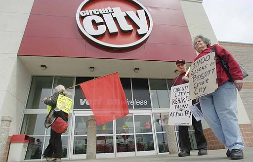

Submitted on Wed, 05/02/2007 - 3:49pm
 By Gideon Dev.
By Gideon Dev.
Truckers in the Port of Los Angeles/Long Beach are mobilizing to repeat their performance of a year ago, when over 90% of the trucks were off the road. The shutdown last year was a show of solidarity with the immigrant rights movement and expression of shop floor anger over work conditions. It gave immediate creditability to the protests and boycott in Los Angeles and throughout the nation.
However, despite success in preventing the reactionary HR4437 from becoming law, the immigrant rights movement has left much wanting. After a rising tide of historic marches whose crest was May Day 2006, the single largest day of protest in US history, there has been a visible dearth of organization to press the concerns of immigrant workers. What momentum there was in spring was lost in summer, as the corporate elite and their partners in government responded with the passage of S2611 by the Democratic Party, as well as the bipartisan ‘Secure Fence Act of 2006’. Highly publicized ICE raids continue to be made—with the expressed purpose of trying to pressure the Congress to approve bracero guest worker programs! Conditions did not change with the marches, but have been getting worse since.
The Los Angeles General Membership Branch (LA GMB) of the IWW has called for a complete shutdown of port trucking as well as solidarity from all related industries this May 1st, 2007. As of the time of this writing, the response and feedback from troqueros has been positive. Nearly all truckers have been encouraged by the news of solidarity from the ILWU locals in San Francisco and Seattle, who resolved to not work on May Day. We in the LA GMB were particularly heartened that their resolutions highlighted both our own involvement in last year’s May Day shutdown, and the current efforts of the March 25th Coalition, of which we are members. It was at the latter’s National Conference for Immigrant Rights that the call was made for a second ‘Great American Boycott’ on May Day, and that the LA GMB committed itself to putting the question of a May Day shutdown to the port truckers directly. However, it has become clear that the impetus for action by the troqueros this year will not solely be supporting the immigrant rights movement, or even reclaiming May Day as the workers’ day, but the condition of being exploited workers who drive international trade.
Submitted on Wed, 05/02/2007 - 3:30pm
By ALAN WECHSLER, Business writer (Photo by Paul Buckowski) - Albany Times Union, May 2, 2007
ALBANY -- As Circuit City Stores Inc. Tuesday projected it will post a first-quarter loss of as much as $90 million, it wasn't getting much sympathy from protesters in front of its local store.
They were members of the Industrial Workers of the World union, and on Tuesday they were protesting Circuit's firing of 3,400 employees around the country. The company had dismissed the higher-paid workers in March, replacing them with lower-paid new hires as part of a cost-cutting plan.
"It's the most incredibly outrageous act by a corporation today," said Paul Poulos of Hartwick, who was passing out fliers that read "Boycott Circuit City."
Circuit City has offered to hire back the workers after a 10-week "cooling-off" period, but at reduced pay.
"It's an unprecedented way to trim costs," said Greg Giorgio, an OTB channel announcer from Altamont who also produces a labor show on WRPI. He held up a sign that said "Circuit City -- Ultimate Corporate Greed."
The manager of the Crossgates Commons store declined to comment, except to say that the protesters -- standing on the sidewalk in front of the store -- were not on store property. A spokesman at the Richmond, Va.-based company also declined to comment.
Circuit City officials say the layoffs were part of the company's attempt to save money in light of worse-than-expected earnings due to poor sales of large-screen televisions.
It now expects a loss from continuing operations before income taxes of $80 million to $90 million for the first quarter of its 2008 fiscal year. The company has also said it is closing seven domestic stores, a Kentucky distribution center and 62 company-owned stores.
Circuit City has long struggled for market share against Best Buy Co., and analysts have said each of Best Buy's locations bring in about twice as much revenue as its smaller rival. Both have seen fierce competition from Wal-Mart Stores Inc.
In a research note Monday, analysts at Stifel, Nicolaus & Co. said Best Buy, the nation's No. 1 electronics retailer, has "significant competitive advantages" and is "well positioned to take business from both Circuit City's operational changes and closed Tweeter and CompUSA stores."
Tweeter Home Entertainment Group Inc. said last month that it is closing 49 of its 153 stores and laying off about 650 workers.
Submitted on Wed, 05/02/2007 - 3:19pm
 Article and Photo by By Sheri Levisay - The Argus Leader, May 2, 2007
Article and Photo by By Sheri Levisay - The Argus Leader, May 2, 2007
It's hard to get people to a rally about workers rights on a beautiful 70-degree day in Sioux Falls.
In fact, it's hard to get people interested on any day in Sioux Falls, said Mike Beaver, one of the organizers of a May Day Rally on Tuesday at Van Eps Park.
"People don't care," Beaver said.
But six people did care enough to show up near the Minnehaha County Courthouse, trickling in between 4 and 5 p.m.
The majority of them are active with the Industrial Workers of the World, "a solidarity union interested in immigrants rights, both legal and illegal," Beaver said.
Some of them looked the part. Beaver wore a T-shirt saying, "Not my president." Various piercings, tattoos, red-streaked hair. One smoked a cigar, another a pipe. One carried a police-style riot shield.
Travis Stuckey, another organizer, showed up a bit late. "It's the first time I've ever worked on May Day," he said.
He had passed out Spanish-language pamphlets at bus stops, near the John Morrell plant and other places where Hispanic workers were likely to gather.
As the activists waited, the discussion wandered from Cinco de Mayo to using cell phones to tell what time it is ("Man, you're paying $40 a month for a watch") to a new kind of dog food that reduces poop, then turned to the U.S. economy.
"There's maybe 20 years max before this country falls into the Third World" if we don't recover manufacturing jobs, Stuckey opined.
About 5:15, Stuckey went to his vehicle to pull out signs and literature. Chris Huska of Act Now to Stop War & End Racism exchanged pamphlets with Stuckey.
When they stood near Minnesota Avenue with signs, there were a few honks - hard to tell whether in accord or in anger.
None of the immigrants the group was trying to help showed up. But South Dakota's low pay and dearth of unions will keep these activists passing out workers rights pamphlets.
"It's needed here quite a bit," Beaver said.
Submitted on Sat, 04/28/2007 - 1:22am
 Written by Leslie Radford - Friday, 27 April 2007
Written by Leslie Radford - Friday, 27 April 2007
Independent truckers announce the LA port will shut down on May 1, the first victory for the 2007 May Day Mobilization for Immigrants' Rights.
PORT OF AZTLAN, April 27, 2007--The independent truckers of the Port of Aztlan, working with the Industrial Workers of the World, made good on their promise to shut down the Los Angeles port on May 1, in support of nationwide migrants' rights protests scheduled for that day and the truckers' struggle to organize. This morning the Los Angeles Port Authority declared the port would be closed for a May 1 "holiday," thereby avoiding potential litigation from shippers facing dockers' and demurrage fees for goods left on the dock during the truckers' strike.
Submitted on Sat, 04/28/2007 - 1:08am
 Workers at the BriarPatch food coop, located in Grass Valley, California, near Sacramento in the foothills of the Sierra Nevada Mountains have joined the IWW. Here is their official announcement:
Workers at the BriarPatch food coop, located in Grass Valley, California, near Sacramento in the foothills of the Sierra Nevada Mountains have joined the IWW. Here is their official announcement:
As we step through the doors of our great new store, it is the goal of many employees to strengthen and improve the working conditions, policies, and benefits for current and future employees.
In an effort to enhance the cooperative spirit between management and staff, employees at the BriarPatch, supported by management, are uniting with the Industrial Workers of the World. The IWW is an alternative organization that supports employees and shops in their individual and creative paths to bettering the workplace.